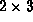
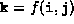
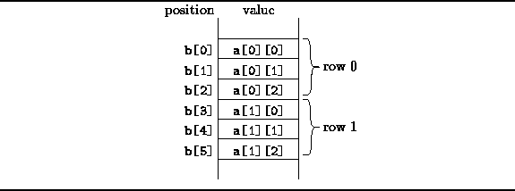
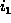
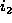

Data Structures and Algorithms
with Object-Oriented Design Patterns in Java
Data Structures and Algorithms
with Object-Oriented Design Patterns in JavaThe memory of a computer is essentially a one-dimensional array--the memory address is the array subscript. Therefore, a natural way to implement a multi-dimensional array is to store its elements in a one-dimensional array. In order to do this, we need a mapping from the n subscript expressions used to access an element of the multi-dimensional array to the one subscript expression used to access the one-dimensional array. For example, suppose we wish to represent a  array of of ints, a, using a one-dimensional array like this:
int[] b = new int[6];Then we need to determine which element of b, say b[k], will be accessed given a reference of the form a[i][j]. That is, we need the mapping f such that .
The mapping function determines the way in which the elements
of the array are stored in memory.
The most common way to represent an array is in
row-major order ,
also known as lexicographic order .
For example, consider the two-dimensional array.
The row-major layout of this array is shown in Figure  .
.

Figure: Row-major order layout of a 2D array.
In row-major layout, it is the right-most subscript expression
(the column index) that increases the fastest.
As a result, the elements of the rows of the matrix
end up stored in contiguous memory locations.
In Figure ,
the first element of the first row is at position b[0].
The first element of the second row is at position b[3],
since there are 3 elements in each row.
We can now generalize this to an arbitrary n-dimensional array. Suppose we have an n-D array a with dimensions
Then, the position of the element a[ ][ ][ ][ ] is given by
where
The running time required to calculate the position appears to be  since the position is the sum of n terms and for each term
we need to compute
since the position is the sum of n terms and for each term
we need to compute  , which requires O(n) multiplications
in the worst case.
However, the factors
, which requires O(n) multiplications
in the worst case.
However, the factors  are determined
solely from the dimensions of the array.
Therefore, we need only compute the factors once.
Assuming that the factors have been precomputed,
the position calculation can be done in O(n) time
using the following algorithm:
are determined
solely from the dimensions of the array.
Therefore, we need only compute the factors once.
Assuming that the factors have been precomputed,
the position calculation can be done in O(n) time
using the following algorithm:
int offset = 0;
for (int j = 1; j <= n; ++j)
offset += * ;
 Copyright © 1998 by Bruno R. Preiss, P.Eng. All rights reserved.
Copyright © 1998 by Bruno R. Preiss, P.Eng. All rights reserved.